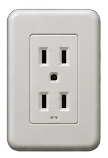
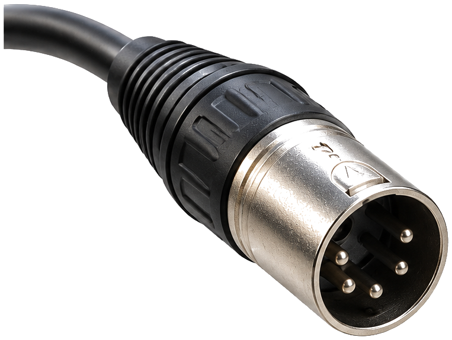

DIMMING / 制御の入口
制御とは？ ― 同じフェーダー、何が違う？
操作して、ケーブルを通るものを比べよう。
ここで見るのは「フェーダーが扱うもの」。 強電＝100V系の電力／弱電＝DC0〜10Vの指示／デジタル＝0と1のデータ。直接制御の機構は前のページで学べます。
強電制御｜100Vがフェーダーに来る
① 電源・入力

AC100V
強電の電気が中央へ
② フェーダーを動かす


このフェーダーに100V系の電気
③ 電球の明るさ
調光ユニット指示を受け取る


灯具用電源
AC100V（別回路）
AC100V（別回路）
フェーダーから調光された電力が電球へ
直接制御は「調光とは」で学習済み
金属抵抗式では、操作部の動きをワイヤロープなどで調光器の接点へ伝えていました。水抵抗式やスライダックの機構は「調光とは」で確認しよう。
「調光とは」へ戻るアンバー：灯具用の電力ブルー：弱電の指示・デジタルデータ移動する光・数字は理解のための演出
▤ 歴史と位置づけ
操作器と調光器が一体の強電操作から、低電圧の遠隔操作へ。ここではフェーダーが扱うものを比べよう。

先生のひとこと
見た目は同じフェーダー。でも強電制御では、フェーダーが100V系の電気を扱っているよ。
※理解のための模式図。波形は電圧の時間変化であり、電流が一方向へ移動する図ではありません。強電タブは可変抵抗式の正弦波振幅モデル、弱電タブの出力はSCR位相制御式の例です。DC0〜10Vの指令値とSCRの出力実効電圧は単純な比例関係とは限りません。帰線・保護回路・内部配線は省略。電球の光はイメージです。